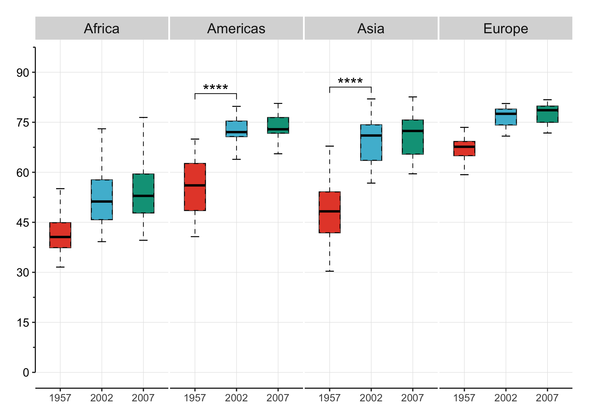
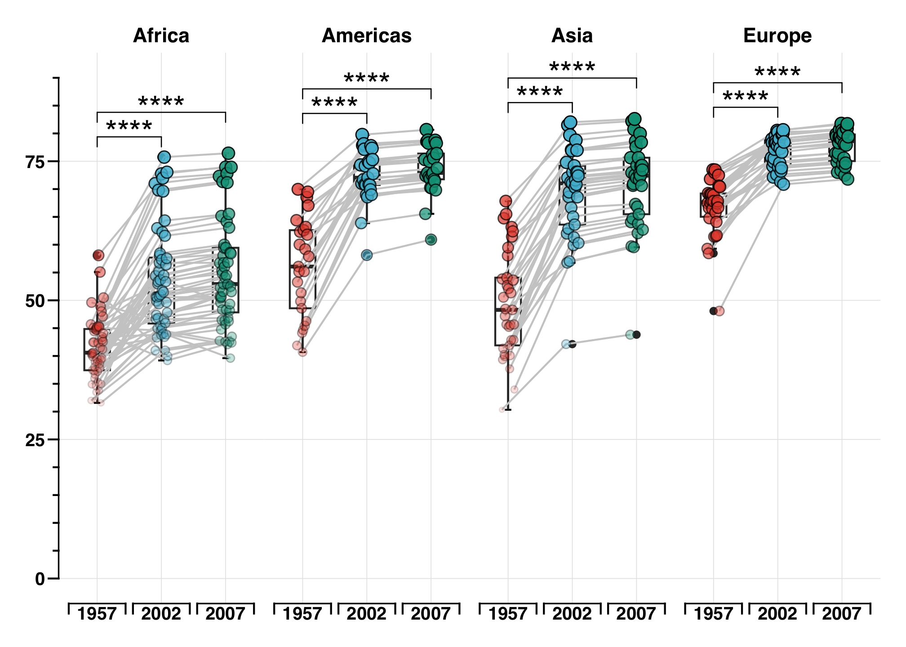

![]()
pacman::p_load(
tidyverse,
ggsci,
ggprism,
rstatix,
ggpubr,
gapminder,
ggpmisc
)How to compute and add p-values to basic ggplots using the rstatix and the ggpubr R packages.
Note
- Compute easily statistical tests (
t_test()orwilcox_test()) using therstatixpackage - Auto-compute p-value label positions using the function
add_xy_position()[in rstatix package]. - Add the p-values to the plot using the function
stat_pvalue_manual()[in ggpubr package]. The following key options are illustrated in some of the examples:
- The option
bracket.nudge.yis used to move up or to move down the brackets. - The option
step.increaseis used to add more space between brackets. - The option
vjustis used to vertically adjust the position of the p-values labels
- In some situations, the p-value labels are partially hidden by the plot top border. In these cases, the ggplot2 function
scale_y_continuous(expand = expansion(mult = c(0, 0.1)))can be used to add more spaces between labels and the plot top border. The option mult = c(0, 0.1) indicates that 0% and 10% spaces are respectively added at the bottom and the top of the plot.
Add t-test annotation in specific subgroup
## subset data
df <- gapminder %>%
filter(year %in% c(1957, 2002, 2007), continent != "Oceania") %>%
select(country, year, lifeExp, continent) %>%
mutate(paired = rep(1:(n() / 3), each = 3), year = factor(year))
df
## # A tibble: 420 × 5
## country year lifeExp continent paired
## <fct> <fct> <dbl> <fct> <int>
## 1 Afghanistan 1957 30.3 Asia 1
## 2 Afghanistan 2002 42.1 Asia 1
## 3 Afghanistan 2007 43.8 Asia 1
## 4 Albania 1957 59.3 Europe 2
## 5 Albania 2002 75.7 Europe 2
## 6 Albania 2007 76.4 Europe 2
## 7 Algeria 1957 45.7 Africa 3
## 8 Algeria 2002 71.0 Africa 3
## 9 Algeria 2007 72.3 Africa 3
## 10 Angola 1957 32.0 Africa 4
## # ℹ 410 more rows
## statistical analysis
df_pval <- df %>%
group_by(continent) %>%
wilcox_test(lifeExp ~ year) %>%
adjust_pvalue(p.col = "p", method = "bonferroni") %>%
add_significance(p.col = "p.adj") %>%
add_xy_position(x = "year", dodge = 0.8)
df_pval
## # A tibble: 12 × 14
## continent .y. group1 group2 n1 n2 statistic p p.adj
## <fct> <chr> <chr> <chr> <int> <int> <dbl> <dbl> <dbl>
## 1 Africa lifeExp 1957 2002 52 52 328 2.85e-11 3.42e-10
## 2 Africa lifeExp 1957 2007 52 52 255 1.01e-12 1.21e-11
## 3 Africa lifeExp 2002 2007 52 52 1214 3.71e- 1 1 e+ 0
## 4 Americas lifeExp 1957 2002 25 25 23 9.12e-11 1.09e- 9
## 5 Americas lifeExp 1957 2007 25 25 14 8.04e-12 9.65e-11
## 6 Americas lifeExp 2002 2007 25 25 250 2.31e- 1 1 e+ 0
## 7 Asia lifeExp 1957 2002 33 33 73 1.23e-11 1.48e-10
## 8 Asia lifeExp 1957 2007 33 33 56 9.62e-13 1.15e-11
## 9 Asia lifeExp 2002 2007 33 33 476 3.86e- 1 1 e+ 0
## 10 Europe lifeExp 1957 2002 30 30 19 3.53e-14 4.24e-13
## 11 Europe lifeExp 1957 2007 30 30 13 6.31e-15 7.57e-14
## 12 Europe lifeExp 2002 2007 30 30 358 1.77e- 1 1 e+ 0
## # ℹ 5 more variables: p.adj.signif <chr>, y.position <dbl>,
## # groups <named list>, xmin <dbl>, xmax <dbl>df %>%
ggplot(aes(x = year, y = lifeExp)) +
stat_boxplot(aes(ymin = ..lower.., ymax = ..upper..), outlier.shape = NA, width = 0.5) +
stat_boxplot(geom = "errorbar", aes(ymin = ..ymax..), width = 0.2, size = 0.35) +
stat_boxplot(geom = "errorbar", aes(ymax = ..ymin..), width = 0.2, size = 0.35) +
geom_boxplot(aes(fill = year), color = "black", outlier.shape = NA, linetype = "dashed", width = 0.5, size = 0.3) +
stat_summary(geom = "crossbar", fun = "median", width = 0.5, color = "black", size = 0.38) +
scale_size_continuous(range = c(1, 3)) +
facet_wrap(. ~ continent, nrow = 1) +
scale_fill_npg() +
scale_y_continuous(limits = c(0, 95), breaks = seq(0, 95, 15), guide = "prism_offset_minor") +
labs(x = NULL, y = NULL) +
theme(
plot.margin = unit(c(0.5, 0.5, 0.5, 0.5), units = "cm"),
strip.text = element_text(size = 12),
axis.line = element_line(color = "black", size = 0.4),
panel.grid.major = element_line(size = 0.2, color = "#e5e5e5"),
panel.grid.minor = element_blank(),
panel.background = element_blank(),
panel.spacing = unit(0.1, "lines"),
axis.text.y = element_text(color = "black", size = 10),
# axis.text.x = element_blank(),
# axis.ticks.x = element_blank(),
legend.position = "none"
) +
coord_cartesian() +
### add p-value
stat_pvalue_manual(
df_pval %>% filter(
continent %in% c("Asia", "Americas"), group1 == "1957", group2 == "2002"
),
label = "p.adj.signif", label.size = 5, hide.ns = F
)
## Warning: Using `size` aesthetic for lines was deprecated in ggplot2 3.4.0.
## ℹ Please use `linewidth` instead.
## Warning: The `size` argument of `element_line()` is deprecated as of ggplot2 3.4.0.
## ℹ Please use the `linewidth` argument instead.
## Warning: The dot-dot notation (`..lower..`) was deprecated in ggplot2 3.4.0.
## ℹ Please use `after_stat(lower)` instead.
Paried t-test in subgroup facet
### Boxplot Parired t-test multiple group
df %>%
ggplot(aes(year, lifeExp)) +
stat_boxplot(geom = "errorbar", position = position_dodge(width = 0.2), width = 0.1) +
geom_boxplot(position = position_dodge(width = 0.2), width = 0.4) +
geom_line(aes(group = paired), position = position_dodge(0.2), color = "grey80") +
geom_point(aes(fill = year, group = paired, size = lifeExp, alpha = lifeExp),
pch = 21,
position = position_dodge(0.2)
) +
stat_pvalue_manual(df_pval, label = "p.adj.signif", label.size = 6, hide.ns = T) +
scale_size_continuous(range = c(1, 3)) +
facet_wrap(. ~ continent, nrow = 1) +
scale_fill_npg() +
scale_x_discrete(guide = "prism_bracket") +
scale_y_continuous(limits = c(0, 90), minor_breaks = seq(0, 90, 5), guide = "prism_offset_minor") +
labs(x = NULL, y = NULL) +
theme_prism(base_line_size = 0.5) +
theme(
plot.margin = unit(c(0.5, 0.5, 0.5, 0.5), units = , "cm"),
axis.line = element_line(color = "black", size = 0.4),
panel.grid.minor = element_blank(),
panel.grid.major = element_line(size = 0.2, color = "#e5e5e5"),
axis.text.y = element_text(color = "black", size = 10),
axis.text.x = element_text(margin = margin(t = -5), color = "black", size = 10),
legend.position = "none",
panel.spacing = unit(0, "lines")
) +
coord_cartesian()
# ggsave(
# here("blog", "2023", "03", "07", "plot.png")
# )Boxplot
df %>%
ggplot(aes(year, lifeExp)) +
stat_boxplot(geom = "errorbar", position = position_dodge(width = 0.2), width = 0.1) +
geom_boxplot(position = position_dodge(width = 0.2), width = 0.4) +
# geom_line(aes(group=paired),position = position_dodge(0.2),color="grey80") +
geom_point(aes(fill = year, group = paired, size = lifeExp, alpha = lifeExp),
pch = 21,
position = position_dodge(0.2)
) +
stat_pvalue_manual(df_pval, label = "p.adj.signif", label.size = 5, hide.ns = F) +
scale_size_continuous(range = c(1, 3)) +
geom_smooth(method = "lm", formula = NULL, size = 1, se = T, color = "black", linetype = "dashed", aes(group = 1)) +
stat_cor(
label.y = 25, aes(label = paste(..rr.label.., ..p.label.., sep = "~`,`~"), group = 1), color = "black",
label.x.npc = "left"
) +
stat_regline_equation(label.y = 19, aes(group = 1), color = "red") +
facet_wrap(. ~ continent, nrow = 1) +
scale_fill_npg() +
scale_x_discrete(guide = "prism_bracket") +
scale_y_continuous(limits = c(0, 95), minor_breaks = seq(0, 95, 5), guide = "prism_offset_minor") +
labs(x = NULL, y = NULL) +
theme_prism(base_line_size = 0.5) +
theme(
plot.margin = unit(c(0.5, 0.5, 0.5, 0.5), units = , "cm"),
strip.text = element_text(size = 12),
axis.line = element_line(color = "black", size = 0.4),
panel.grid.minor = element_blank(),
panel.grid.major = element_line(size = 0.2, color = "#e5e5e5"),
axis.text.y = element_text(color = "black", size = 10),
axis.text.x = element_text(margin = margin(t = -5), color = "black", size = 10),
legend.position = "none",
panel.spacing = unit(0, "lines")
) +
coord_cartesian()
## `geom_smooth()` using formula = 'y ~ x'